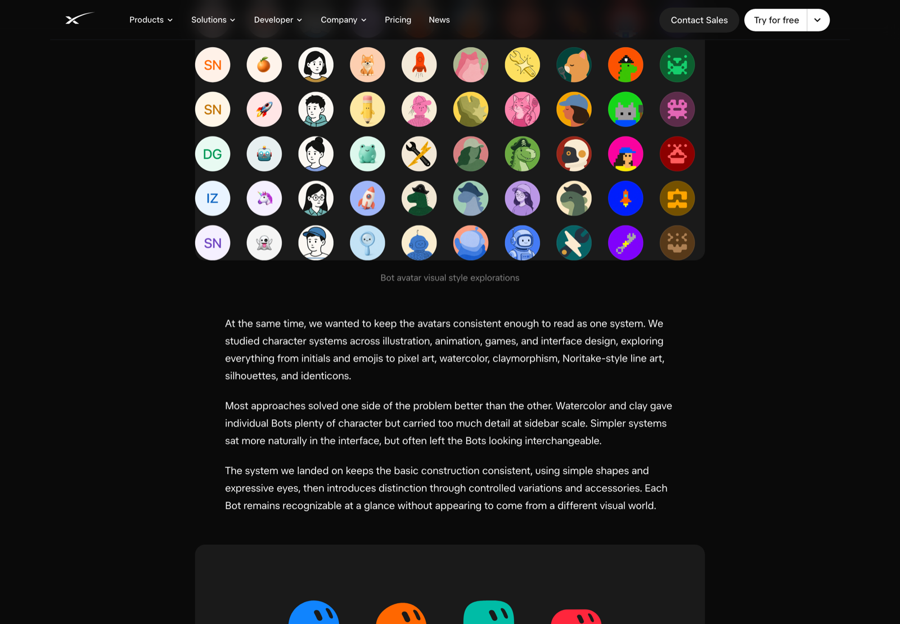
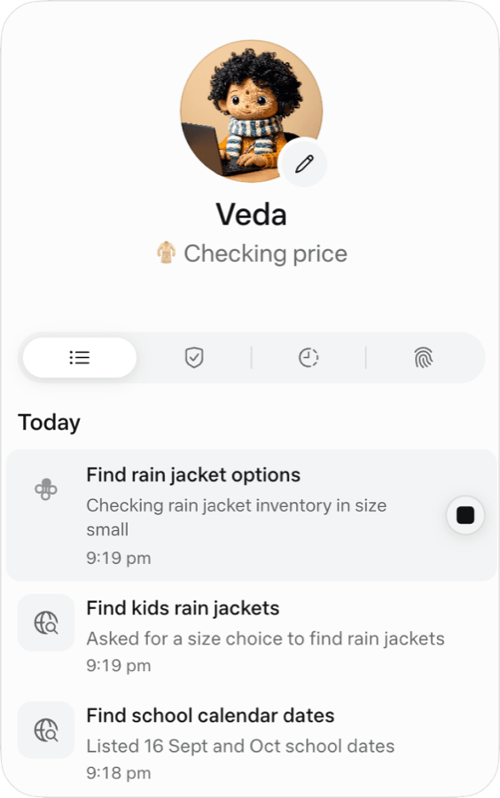
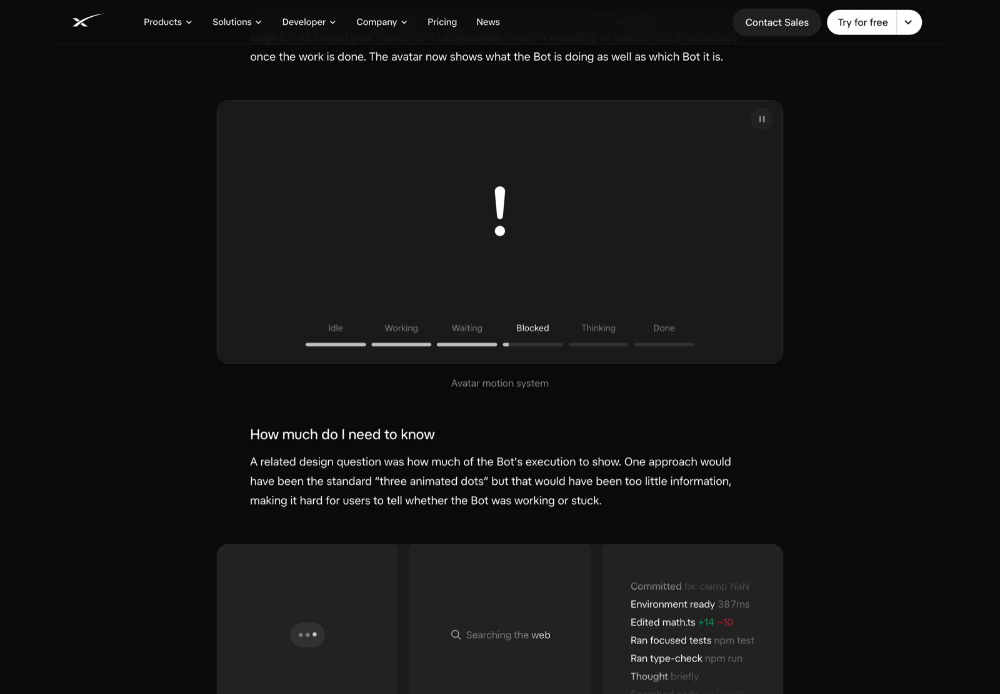
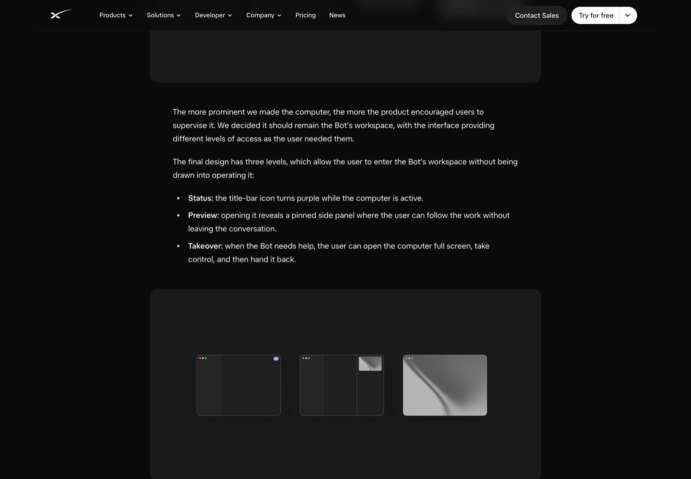

Round 1 settled the structure. This round picks the look. Each choice saves on click. When you're done, press Send answers to Claude and Claude reads them right away. The three directions come from Uplink Room's own ideas (attention, people with agents, and who's driving), not from space. Rows on this page are live HTML in each direction's fonts; the films are stageshow scenes.
1
Brand direction
Each direction is the same Inbox with the same content, so only the look differs. The board shows the mark, the app icon, the type pair and the palette.
aNeeds you The brand is the attention signal. Graphite, and amber is the only loud color.
Film in progress
bThe room The brand is people and agents together. Warm dark, presence first.
Film in progress
cThe wheel The brand is who's driving. Blue-black, cobalt, legibility first.
Film in progress
2
Typeface pair
You can take a direction's look with another direction's type. Same rows, three pairs. The second face is only for timers, machines and commands.
aHost Grotesk + Martian Mono
bFamiljen Grotesk + Fragment Mono
cAtkinson Hyperlegible Next + Mono
The timers tick for real. Atkinson Hyperlegible was drawn by the Braille Institute for low-vision readers.
3
Row density
Discord's 2025 refresh offers Compact, Default and Spacious; Linear ships one tight density.
Compact
Default
Spacious
4
How a working run shows it's alive
Linear shows "Working 00:12" with the current step in dim text; Vercel's Geist animates a dot only while work runs.
aTimer and current step
bSpinning arc
cProgress bar
A progress bar implies a known end. Agent runs rarely have one, so (c) would mostly guess.
5
Where keyboard shortcuts show
Raycast prints keys in a footer; Linear shows them in menus; Superhuman teaches one key at a time.
aFooter, always
bOn the focused row
cIn menus only
6
What Inbox zero looks like
Linear says "No unread notifications". Superhuman replaces the list with a full-bleed photo. Uplink Room has work still running, so zero isn't "nothing happening".
aOne quiet line
Inbox
Nothing needs you2 runs working
bA calm reward
Inbox
Inbox zeroEverything is settled.
cToday's summary
Inbox
Inbox zeroHere's what moved today.
12 settled2 working1 snoozed
7
When settled work comes back
In Superhuman, a conversation marked Done returns when someone replies. The same rule here: a settled task comes back if one of its runs changes again.
Agents as teammates
You named Grok Bot, Instinct, Muse and the agents that live in iMessage. Their makers published how they designed them; these questions take the parts that fit a team. Sources: Designing Grok Bot, How We Designed Muse, and TechCrunch's list of agents that live in your texts (Instinct, Caddy, Iris and others).
8
What an agent's avatar is
Round 1 settled square avatars with initials. Grok Bot studied initials, emoji, pixel art, clay and line art, then chose one character system: simple shapes and expressive eyes, with variations and accessories so each Bot is recognizable at a glance. Muse lets each person design and name their own agent ("Veda").

Grok Bot's explorations, from initials to characters.

Muse: your agent's own face and name, its current action under it.
9
Where an agent's state shows
Grok Bot moved state onto the avatar itself: idle, thinking, working, waiting, blocked, done, each a different motion, with the current action on hover. The live demo below does the same with our square avatars and run-state colors; the line under each is what hovering would show.
HM
Idle
Nothing assigned
HM
Thinking
Planning the release
CX
Working
Running pnpm test
CX
Waiting
Needs Julio to allow a command
GB
Blocked
playtest-pc is offline
GB✓
Done
Worked 6m, 3 files

10
A roster of agents in the sidebar
Grok Bot's main objects are Bots, not conversations: the sidebar is a roster, each row a Bot with its latest line ("Need your yes on the Friday all-hands deck"). Our sidebar puts the Inbox first; a roster would sit under it, listing the team's agents and anyone's harness runs with their state on the avatar.
11
How conversations look
Muse chose chat bubbles because its agent messages you on its own and people send several messages in a row; bubbles mark where one thought ends. Grok Bot mixes bubbles, system events ("Created Routine Morning Briefing") and live cards in one transcript. Channels in Slack and Discord use flat rows.
aRows everywhere
J
Julio9:41 Can you check in with everyone and ship 0.4.2 if it's clean?
HM
Hermes9:41 On it. Pinging Codex and Grok Build for status.
HM
Hermes9:44 All clean except one: Codex wants to add a package.
Codex wants to run a commandLevel 3 layout
pnpm add -D tiled-map
Allow onceDeny
bBubbles with events and cards
9:41
Can you check in with everyone and ship 0.4.2 if it's clean?
On it. Pinging Codex and Grok Build for status.
4 messages with Codex and Grok Build
All clean except one: Codex wants to add a package.
Codex wants to run a commandLevel 3 layout
pnpm add -D tiled-map
Allow onceDeny
The approval card is the same in both: Muse keeps approvals as fixed accept and reject controls, never as prose.
12
How much of an agent's computer you see
Grok Bot found that the more visible the agent's computer, the more people supervised it instead of delegating. It settled on three levels. Ours map onto terminals and Spaces, and onto passing the wheel.
Status
A title-bar mark lights while the machine is in use.
Preview
A pinned side panel you follow without leaving the thread.
Take the wheel
You're driving
Full screen, you drive, then hand it back.

13
Reaching Uplink Room from your texts
Instinct has no app: you text it on iMessage or WhatsApp, or call it. TechCrunch lists more agents that work this way. For Uplink Room this would mean texting the team's agents and answering your Inbox ("Allow once?") from Messages.